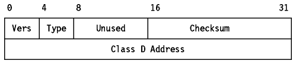

Table of Contents
Table of Contents  Traceroute
TracerouteIGMP is a standard protocol with STD number 5 which also includes IP (see Internet Protocol (IP)) and ICMP (see Internet Control Message Protocol (ICMP)). Its status is recommended and it is described in RFC 1112.
Note: IP and ICMP are required.
IGMP is best regarded as an extension to ICMP and occupies the same place in the IP protocol stack. (3)
See Multicasting for an introduction to multicasting.
ICMP messages are sent in IP datagrams. The IP header will always have a
Protocol number of 2, indicating IGMP and a Type of Service of zero (routine).
The IP data field will contain the 8-byte IGMP message in the format shown in
Figure - ICMP Message Format.

Figure: ICMP Message Format
Where:
Systems participating in IGMP fall into two types: hosts and multicast routers.
As described in Multicasting, in order to receive multicast datagrams, a host must join a host group. When a host is multi-homed, it may join any group on one or more of its interfaces (attached subnets). The multicast messages that the host receives from the same group on two different subnets may be different. For example 244.0.0.1 is the group for ``all hosts on this subnet'', so the messages received on one subnet will always be different for this group from those on another. Multiple processes on a single host may be listening for messages for a multicast group on a subnet. If this is the case, the host joins the group once only, and keeps track internally of which processes are interested in that group.
To join a group, the host sends a report on an interface. The report is addressed to the multicast group of interest. Multicast routers on the same subnet receive the report and set a flag to indicate that at least one host on that subnet is a member of that group. No host has to join the all hosts group (224.0.0.1); membership is automatic. Multicast routers have to listen to all multicast addresses (that is, all groups) in order to detect such reports. The alternatives would be to use broadcasts for reports or to configure hosts with unicast addresses for multicast routers.
Multicast routers regularly, but infrequently (RFC 1112 mentions one-minute intervals), send out a query to the all hosts multicast address. Each host which still wishes to be a member of one or more groups replies once for each group of interest (but never the all hosts group, since membership is automatic). Each reply is sent after a random delay to ensure that IGMP does not cause bursts of traffic on the subnet. Since routers do not care how many hosts are members of a group and since all hosts which are members of that group can hear each other replying, any host which hears another claim membership of a group will cancel any reply that it is due to send in order to avoid wasting resources. If no hosts claim membership of a group within a specified interval, the multicast router decides that no host is a member of the group. When a host or a multicast router receives a multicast datagram, its action is dependent upon the TTL value and the destination IP address.
It may seem at first as though a host need not bother reporting its membership of a group in this range since multicast routers will not forward datagrams from other subnets. However, the report also informs other hosts on the subnet that the reporting host is a member if the group. The only group which is never reported is 224.0.0.1 because all hosts know that the group consists of all hosts on that subnet.
This allows a host to locate the nearest server which is listening on a multicast address using what is called an expanding ring search. The host sends out a datagram with a TTL value of 1 (same subnet) and waits for a reply. If none is received, it tries a TTL value of 2, then 3, and so on. Eventually it will find the closest server. (4)
 Address
Resolution Protocol (ARP)
Address
Resolution Protocol (ARP)